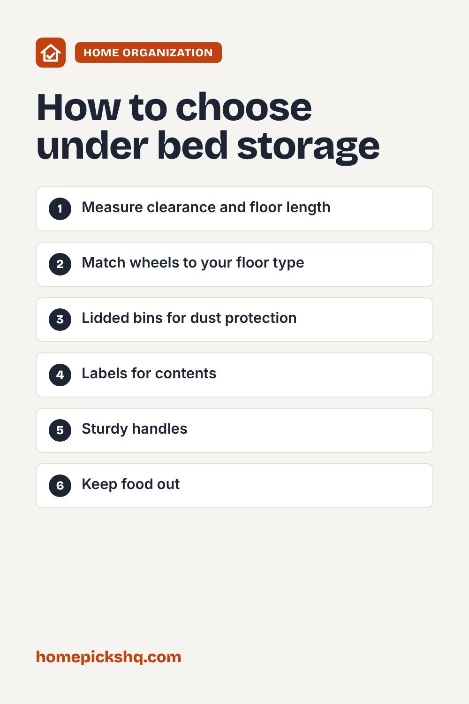

Best Under-Bed Storage: Bins, Drawers, and Bags

How we write these guides: we research manufacturer specifications, expert guidance, and owner feedback. We do not claim to have lab-tested every product. If product links are added, some may be affiliate links; see our disclosure.
The space under your bed is some of the most underused storage in your home. With the right containers, you can store off-season clothes, linens, and shoes out of sight. This guide shows how to pick the right ones.
Measure the clearance
Measure the height between the floor and the bed frame, plus the length and width available. Many beds have 6 to 18 inches of clearance. Remember to account for slats, center supports, and legs.
Rolling drawers and bins
Rolling drawers glide out easily, which is helpful on hardwood floors. On thick carpet, wheels can be harder to push, so a bin with handles may work better. Lidded bins protect against dust.
Fabric vs plastic
Fabric bins are breathable and light, which suits clothing and linens. Hard plastic bins protect against dust and light moisture, which suits shoes and items you want to stack.
What to store
Good candidates include off-season clothes, extra bedding, towels, and shoes. Avoid storing food or anything that could attract pests. Vacuum bags save space for bulky bedding, but avoid compressing down items for long periods.
Keep it organized
Label each container and store seasonal items together. Check periodically for dust or moisture, and keep the area under the bed from becoming a catch-all.
Quick buying checklist
- Measure clearance and floor length
- Match wheels to your floor type
- Lidded bins for dust protection
- Labels for contents
- Sturdy handles
- Keep food out

Frequently asked questions
Will under-bed storage attract dust?
Lidded containers help. Vacuum under the bed regularly.
Can I use bed risers?
Yes, risers add height for larger bins. Make sure they are stable and rated for the bed's weight.
Is it good for shoes?
Yes, in flat shoe boxes or shallow drawers.